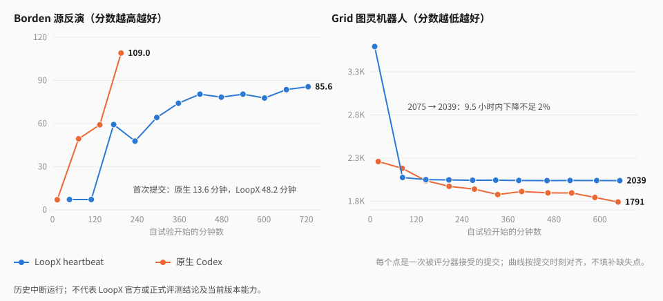
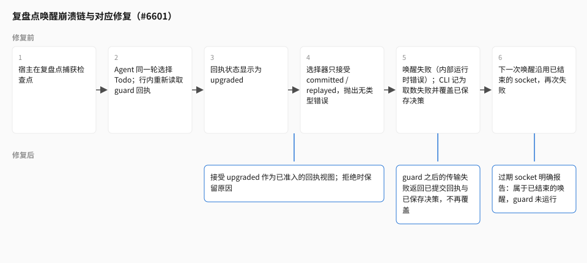

songoow · 2026-10-16 · 阶段性研究稿 · 证据截点 03:10 UTC
24 小时之后，Agent 为什么停在原地
LoopX 长程运行的一轮修复：四类故障、它们的归属，以及尚未证明的部分
上一篇文章记录了 Portfolio 与 Lean 上的阶段性进展。这一轮我们把同一套系统放到更长的时间尺度上：与原生 Codex 成对运行 24 小时，并在 LHTB 的 90 分钟任务上检验目标是否会过早关闭。结果不好看，但很清楚：LoopX 的 Agent 一直在工作，分数却不动；原生对照在同一时间里换了三次方法。
本文解释这些曲线背后发生了什么。四类故障各自有可定位的原因：第一次外部反馈来得太晚；每到复盘点就崩溃一次；复盘允许“保持现状”，于是十个小时都在同一个解法上微调；以及在 LHTB 上，目标在隐藏评分远未达标时就宣布完成。我们把每项修复标注为产品改动还是实验脚本改动——这个区分决定了重跑的结果能说明什么。
我们的判断是：这轮暴露的主要是产品问题，不是模型问题。原生 Codex 用同一个模型拿到了更好的分数。修复有一部分已经完成并通过真实 CLI 验证，有一部分只是方向；两者在文中分开标注。
1. 这一轮在回答什么问题
上一轮的结论是“系统整体比最初更有效，但贡献还没拆清”。这一轮我们换了两类任务来逼近一个更具体的问题：当任务有真实的外部评分器、而且时间足够长时，LoopX 的控制面是让 Agent 更会用这段时间，还是只是让它一直醒着？
| 任务 | 评分方向 | 对照 | 预算 | 状态 |
|---|---|---|---|---|
| EdgeBench Borden 源反演 | 越高越好 | LoopX heartbeat（planned 入口）对原生 Codex | 24 小时，原生反馈，提交冷却 1 小时 | 两对；第一对 12.4 小时中断，第二对 3 小时暂停 |
| EdgeBench Grid 图灵机器人 | 越低越好 | 同上 | 24 小时，同上 | 11.7 小时暂停 |
| EdgeBench Borden / codec / rust / jagua | 本组均越高越好 | LoopX 组合修复版、原生 official、native-goal | 90 分钟本地，冷却 15 分钟 | 13 条有评分：11 条正常终态、2 条运行器失败；另有 2 次无评分启动失败 |
| LHTB 四题（covshift 等） | 隐藏集 reward 0–1 | LoopX heartbeat 单臂，与历史五臂研究比较 | 90 分钟 | 四题试点完成，covshift 带验收门重跑完成 |
EdgeBench 使用 gpt-6.1-sol / xhigh，两臂同一模型、同一镜像、同一评分器；LHTB 使用 gpt-5.6-sol / max。“原生反馈”指 Agent 可以主动提交并拿到公开评分，冷却时间内不能再提交。原 Borden 与 Grid 第二轮的 LoopX 臂启用了检查点捕获；Borden 第二对和本地组合修复版关闭了检查点，但显式开启了 TurnEnvelope。这些处理不能混为一个默认配置，第 7 节会具体区分。
这些运行有不少没有跑完。原因有两类：我们自己的实验控制脚本出了故障（容器计数守卫被另一组的评分容器触发；控制进程在读取一个正在退出的容器时崩溃），以及本文写作时我们主动暂停了全部运行，先修复再重跑。中断的运行仍然是证据——曲线在中断前已经说明了问题——但不能当作终态成绩。
2. 分数曲线说明了什么

三个现象在两道题上都出现了，而且互相独立。
第一次外部反馈来得晚。Borden 上原生 Codex 在第 13.6 分钟拿到第一个分数，LoopX 在第 48.2 分钟；Grid 上是 21 分钟对 12 分钟，但 LoopX 的第一次提交是一个 3593 的占位解。在一个每小时只能提交一次的任务里，晚 35 分钟意味着整条曲线向右平移半个冷却周期。
曲线在一个局部解上变平。Grid 上 LoopX 第 85 分钟就到了 2075——当时比原生的 2182 更好——此后 9.5 小时、9 次提交，分数从 2075 走到 2039，下降不足 2%。原生同期从 2182 到 1791，中间换了三次方法：嵌入 C++ 加速器、加入动态规划修补步骤、对代价参数做扫描。Borden 上 LoopX 从第 3 次提交起几乎只改一个振幅常数，每小时提高约 2 分。
提交有时倒退。Borden 第一对里 LoopX 11 次有效提交出现 3 次倒退；第二对里从 68.1 掉到 41.7，拆开评分器报告看，公开部分的误差在改善，隐藏井位的误差从 0.09 升到 0.74——它在拟合公开数据。原生也倒退过（54.7 到 50.3），所以这不是 LoopX 独有的问题，但每次倒退都浪费一个冷却周期。
原生在 Borden 上的 109 需要单独说明。评分器报告会返回隐藏集合的聚合指标，原生臂和本地短测里的修复版 LoopX 都通过拟合这些指标到达了 109。这是协议层面的泄漏，不是建模能力；我们把它记为任务问题，不计入任何一方的能力证据。
本地多题补充：更早提交，没有变成全面领先
本地报告覆盖四个任务、13 条有评分运行和 71 次原生提交。它们共用一台四核、16 GiB 主机，资源上限不是独占预留。下图按每臂原生会话首记录归零，取 submitted_at 定位每次提交，再绘制截至该次提交的历史最佳分；线只连接观测点，止于末次提交，没有拟合函数、置信带或补造的零分。

| 任务 / 轮次 | 组合 LoopX 最佳 | 原生 official 最佳 | native-goal 最佳 |
|---|---|---|---|
| Borden | 109.000‡ | 69.579 | 未运行 |
| 整数压缩编解码 | 24.714 | 28.620 | 12.836 |
| Rust 多 crate 重建 | 26.506 | 26.597 | 26.597* |
| Jagua 第一轮 | 22.655 | 28.555 | 32.464* |
| Jagua 第二轮 | 7.743 | 26.532 | 未运行 |
* Rust 与 Jagua 的 native-goal 保留有效评分，但运行器截止回合超时，没有正常 final_result。编解码 native-goal 约38分钟自判完成；另两次编解码启动失败没有评分，未计为0分。‡ Borden 109的协议限制见上文。
以这里明确的原生首记录时钟计算，组合 LoopX 首次提交约1.7–3.0分钟，official约2.8–9.7分钟。更早提交并没有保证更高的最终最佳分：编解码和两轮Jagua均落后，Rust接近。组合版对official的非缓存输入token比值约为Borden 1.06、编解码1.31、Rust 1.01、Jagua 1.67 / 1.57；这些运行也没有显示出更少的非缓存输入，不能直接换算为总费用节省。
Borden第二对：保留早期领先，也保留中断

12bb5c931，checkpoint关闭、TurnEnvelope显式开启；横轴从本组控制器启动归零，与本地曲线时钟不同。每臂三次提交，最后一次分别为41.714和50.347；图中保留的是历史最佳68.108和54.705。这对运行的控制器在容器资源采样时崩溃，随后求解进程被停止，缺少正常终态结果。陈旧状态文件仍写着 running，不能据此视为持续执行；保留的最佳分也不能作为24小时完成成绩，或作为检查点恢复已经修好的证据。
相关公开报告与图表数据
反馈优先观察与运行器修复报告（冻结版本）提供本地成绩、失败分类、token口径和修复边界；其远端表保留更早窗口，不能覆盖本文后续的中断记录。covshift验收门重跑记录对应第6节的0.82结果，属于另一个基准。
下载本节曲线数据CSV：本地71条、远端Borden第二对6条标量观测，保留单次分、历史最佳、时钟原点与收尾分类。它是绘图数据，不包含任务材料、解答、完整轨迹或隐藏评测明细，不能据此独立复现完整实验。
3. 迟到的反馈：规划把提交排到了第三次唤醒
从会话轨迹和唤醒回执可以直接读出原因。planned 入口让 LoopX 先做一次规划，规划器的默认画像是面向开放式产品方向的：它把一个有明确评分器的有界任务拆成了三个顺序 Todo——P0 正向模型、P0 反演、P1“有了可运行的候选之后，再通过原生评测迭代”。每次执行唤醒恰好完成一个 Todo，然后花一到一分半钟做结算（完成 Todo、认领下一个、写回 vision、记录配额）。提交因此落在第三次唤醒。
这不是控制面开销的问题。规划本身约 1.3 分钟，结算合计几分钟；真正的 35 分钟差距来自 Todo 的顺序。把评测反馈排在“先把模型做好”之后，在一个评分器可以立即告诉你方向的任务里，是一个错误的先验。
#6584曾实验性地要求先取得一次接受的评测，再扩展本地校准。这条约束已由合入主干的#6612撤回：当前运行器不再提供--feedback-first及其规划环境开关。下述首提交时间属于历史组合版本，不是当前启用建议，也不验证现行修复。本地四题的组合版本首提交约1.7–3.0分钟；同组official约2.8–9.7分钟，具体时钟见第2节。原Borden长测约48分钟的观察来自不同源码、冷却和运行条件，不能写成同条件的“48分钟降到2分钟”。
历史机制是实验运行器一侧的规划输入，不是产品能力的提升。它当时默认关闭，改变工作顺序，不改变预算、提交权或决策规则。轨迹定位到Todo顺序中的延迟；组合对照并不证明单因素收益。产品仍需回答共享规划怎样兼顾首次交付质量与有用反馈；第5节讨论的是路径停滞后仍持续原地工作的另一个问题。
维护者要求撤回，原因是feedback-first指引可能引导模型落入质量更低的初始点。更早取得反馈本身不证明首份交付更好，质量、延迟和完整成本需要分别比较。先交一个有竞争力的候选，和先交一个最小的候选，可能让后续工作走向不同；历史组合运行不能隔离这个效果。原版Grid的轨迹显示了围绕弱起点长期迭代的现象，但它没有启用新增的feedback-first，不能把该现象写成这个选项的已知副作用。这一点需要在同条件重跑中检验。
4. 复盘点崩溃：一个状态字没有被接受
Grid 的 4 个复盘点全部崩溃；Borden 第一对 87 次唤醒里 24 次失败，8 次是 EffectRuntimeInternalError，16 次是 ValueError。本地组合修复版未启用检查点交接，没有观察到这条复盘捕获故障链；这不抹去本地另有的两条native-goal运行器超时和两次启动失败。失败的直接代价只有二十几分钟的原生时间，但每次失败都打断结算，并把之后的唤醒推进“先恢复、再审查”的模式——复盘变成了恢复的副产品。

根因是一个没有被接受的状态字。宿主在复盘点捕获检查点之后，Agent 在同一轮选择 Todo；这次选择会在 CLI 内部重新读取一次 guard，回执的状态渲染为 upgraded——它是同一份持久回执的合法视图，表示选择已把绑定追加上去。检查点选择器只接受 committed 和 replayed，于是抛出一个没有类型的错误，宿主把它表面化为内部错误，整次唤醒结束。
CLI 一侧把损害放大了。被拒绝的交接落进了外层 guard 的兜底分支，被报告为 quota_unexpected_collection_error——“取数失败”——并覆盖了已经保存的决策文件。下一次唤醒恢复的原生会话还记得上一轮的交接 socket，而那个 socket 随上一次唤醒一起删除了，于是先是配额校验失败，再是捕获目录的 ValueError。两道题的失败唤醒都是这一条链。
修复在 #6601，全部是产品代码：选择器接受 upgraded，拒绝时抛出带原因的类型化错误；guard 之后的捕获或交接失败成为一个新的类型化结果 quota_decision_transport_failed，连同已提交的回执和已保存决策的路径一起返回，不再覆盖；过期 socket 明确报告“属于已结束的唤醒，guard 没有运行”；失败报告保留错误类型和有限长度的信息——此前唤醒回执只记了异常类名，这也是这个问题过了两道题才被定位的原因。七个新测试在修复前全部失败、修复后全部通过；默认路径（不开捕获、不开交接）行为不变。
没有修的部分：恢复的会话仍然可能记住旧 socket，只是现在会在 guard 运行前得到明确的错误；崩溃之后的下一次唤醒不会自动回到复盘模式。两者都指向同一个更大的设计问题——每次唤醒一个新 socket 的传输方式——第 7 节会回到这里。
5. 原地微调：复盘允许保持现状，而它一直在保持
Grid 上最值得解释的不是崩溃，而是崩溃之间的 9.5 小时。我们从 Todo 状态、复盘记录和工具调用里读到三件事。
四次复盘都选择了“保持路线”。周期复盘每 6 个已结算 Turn 触发一次；复盘指引写着“到期的复盘可以保持现有路线，不强制换路”；新颖性检查只要求一个新假设。于是“把运行时上限从 28 秒再压一点”算作新假设，四次复盘都通过了。同一时间原生分数从 2182 降到 1878，LoopX 的每一次复盘都看得见这个差距，但没有任何规则要求它据此做什么。
一个笼统的 Todo 占了十个小时。规划产出的第三个 Todo 是“提交……并继续有用的本地改进”。它从未关闭，租约续了 12 次，没有新增任何 Todo。Todo 列表里没有策略：没有“假设族”，没有退出条件，没有“如果三次提交不改善就换方法”。
控制面开销约占四分之一。188 次 LoopX CLI 调用加上约 345 次读取 guard 包和决策文件，大约占 11.7 小时中的 2.8 小时；输入 token 2.07 亿对原生的 1.46 亿；上下文压缩 20 次对 7 次。原生几乎没有这类开销。
为什么不能简单加一条“分数停滞就强制换路”
这是最直接的修法，我们也最先想到它。但 LoopX 的核心今天没有任何数值的进展信号。它唯一知道的“进展”是 Agent 自己申报的分类——advanced、unchanged、blocked——Grid 的 Agent 每一轮都申报 advanced，而 2041、2040、2039 在它看来确实是进展。更重要的是，已接受的设计明确禁止通用核心从分数斜率或失败计数推导换路决定：一个指标意味着什么，由产生它的 provider 决定，不由控制面猜。这条规则有它的道理——Lean 上“删掉一个 sorry”和 Borden 上“分数涨 2 分”不是同一种进展——我们不打算为了一道题推翻它。
设计里已经为此留了位置：外部进展审查。一个独立的观察者在每次工作转换后写入类型化的“漂移”回执；在 assist 模式下，连续若干次漂移会升级为现有的重新规划义务，而回答这个义务时不能复述旧假设或只改名字——必须带新证据。它默认关闭，今天唯一的观察者判断的是代码变化，不是评分器分数。而且它有一个产品缺陷：当归属信息缺失（没有 agent-id，或窗口里没有类型化进展记录）时，assist 会静默地永远不触发，status 看起来却一切正常。
所以修复方向是三条产品改动，都还没有实现：让 provider 可以写入“指标停滞”这一类漂移信号，方向、阈值和是否算停滞由 provider 决定，核心只消费它并走现有的义务链；让 assist 无法触发的原因在 status 里可见；让规划契约拒绝“继续优化”这类没有退出条件的开放式 Todo，迭代工作必须带退出条件，下一轮通过重新规划进入。即使这些都做了，Agent 仍然可能用一个“新的”调参假设来回答义务——它能保证的是不能在无人察觉的情况下原地微调十个小时，不能保证它真的换到一个不同的方法。
6. 过早关闭：验收门改变了“什么算做完”
LHTB 的四道试点任务给出了同一个模式。四次运行里，LoopX 的调度器都在 90 分钟预算的第 43–60 分钟发出 stop_until_explicit_resume，理由一字不差：“已验证的闭合证据推导出无后续，并确认没有剩余前沿”。此时隐藏集 reward 分别是 0.000、0.028、0.086 和 0.093。只有外层“继续直到超时”的机制把 Agent 叫了回来，第二阶段没有再自行停止。
这和上一篇文章里 Portfolio 的 no_followup 故障同源：所有 Todo 都完成了，不等于原目标已经满足。区别在于这次有一个隐藏评分器清楚地告诉我们，Agent 用来判断“做完了”的证据是什么都不是。两道题的 Agent 在隐藏包装清单上直接退出非零，一道题通过了隐藏的格式检查却在权重 0.89 的端到端压力测试上得零——它从未针对任务说明里写明的验证接口检查过自己的交付物。
我们没有改调度规则，而是改了闭合证据的来源。#6585 增加显式开启的 LOOPX_ACCEPTANCE_CONTRACT=planned：规划阶段让模型同时写一份目标验收文档——哪些 Todo 交付结果、每个 Todo 绑定哪些可执行的验收条件、条件必须通过任务说明的验证接口来检验交付物；实验宿主以受信任的本机 owner 身份，通过现有的 goal-acceptance 契约配置它。之后被选中的 Todo 在条件通过之前不能完成，目标也不能在它仍然开着时关闭。
| covshift | 试点（默认） | 带验收门（单次） | 五臂研究 heartbeat |
|---|---|---|---|
| 隐藏集 reward | 0.000 | 0.82 | 0.743 |
| 自行停止 | 第 55 分钟 | 第 38 分钟，但在三条条件全部通过之后 | — |
| 费用 | $15.8 | $15.3 | — |
机制读回：规划配置了 3 条条件一一绑定 3 个 Todo；第一个 Todo 的 todo complete 运行了绑定的“通过提交的模型在公开验证行上调用 predict”条件并通过——这正是试点里交付物在评分器沙箱中无法预测的那个故障。第二阶段重新规划后写了新条件，两次完成尝试因交付物不满足而被拒绝，直到满足为止。
这项改动的性质同样要说清。验收门是实验运行器替模型写文档、再调用 LoopX 现有能力；LoopX 自己仍然在第 38 分钟宣布完成。它改变的是“什么算闭合证据”——必须是验证器形状的、owner 锁定的——而不是“Agent 可不可以关闭”。0.82 是一次运行；强制继续之后是否还有增益，这次实验回答不了。评审还找到了一个真实的反例：再次确认时宿主重新读取了模型可改写的草稿，于是一次 Todo 编辑加一次条件改写就能让缺失产物的 Todo 完成。现在宿主只重放自己接受过的那份文档，并在 owner 契约摘要变化时拒绝；这个反例已进入真实 CLI 测试。
7. 哪些数字不能用
写到这里，有一个发现迫使我们重新给前面的证据定性。
LoopX 有一个默认关闭的 TurnEnvelope：把几十 KB 的配额决策压缩成约 8 KB 的行内视图，其余内容写到文件按引用读取。检查点交接的实现会在传了捕获目录时自动给 guard 命令加上 --turn-envelope。原Borden与Grid第二轮因此实际启用了envelope；本地组合修复版和远端Borden第二对虽然关闭checkpoint，却显式开启了envelope。本地回执明确为 turn_envelope=true、turn_envelope_source=explicit。它们都不是干净的envelope-off对照；没有观察到捕获故障链不能证明关闭envelope改善了稳定性。
这反过来让 Grid 成了 envelope 的第一份真实长程测量，结论不乐观：Agent 读了约 345 次完整的捕获文件，每个 37–57 KB——行内变短了，字节只是换了地方，还多了一次文件读取和一个每次唤醒新建的 socket，后者正是第 4 节崩溃的来源。那约四分之一的控制面开销是 envelope 打开时测出来的。另一方面，一个未合入的实验版本放宽了 envelope 的“每次改动工作区就重新进 guard”规则，CLI 调用从 65 降到 25、配额检查从 40 降到 8——说明重入节奏才是开销的大头，不是包的大小。
由此引出两条结论。第一，交接和 envelope 应当解开：配额 CLI 本来就是两个独立开关，只有 heartbeat 构建器把它们绑在一起，这是一个有边界的产品改动。第二，在把配额包和 envelope 融合之前，先做那个一直没做的验证——不开检查点、同一题 envelope 开/关各一对，测未缓存 token、包读取次数、CLI 调用数、时间占比与分数。融合的方向可以从这些证据里直接读出来：Agent 必须据以行动的决策文本留在行内，完整细节通过稳定的 CLI 读回按需获取，重入节奏写成显式规则。这是设计层面的工作，不在这一轮的代码里。
还有三类数字要单列。实验控制脚本的事故——容器计数守卫被评分容器触发、控制进程读取退出中的容器时崩溃——缩短了运行，但不是 LoopX 的故障。Borden 的 109 来自评分协议泄漏，第 2 节已经说明。所有“修复后”的本地数字都带着多项变化同时发生：feedback-first、放宽的重入规则、显式 envelope；没有一个可以单独归因。
8. 怎样评价这批修复
和上一篇一样，我们按解决的缺口与证据评价，不按 PR 数量。这次多了一列：改动落在产品还是实验脚本。这一列决定了重跑的分数能说明什么——一个运行器侧的修复让曲线变好，证明的是“运行器的输入改变了结果”，不是 LoopX 的能力。
| 缺口 | 归属 | 已证明 | 尚未证明 |
|---|---|---|---|
| 首次反馈太晚 | 实验脚本（实验性规划约束，现已撤回） | 轨迹显示Todo顺序延后提交；本地组合版首提交约1.7–3.0分钟，official约2.8–9.7分钟 | 单因素收益或首次交付质量保持；#6612移除此选项，没有把时序更早当成验收成功 |
| 复盘点唤醒崩溃 | 产品（检查点选择器、配额 CLI） | 根因逐字段复现；7 个新测试修复前失败、修复后通过；默认路径不变 | 真实 Docker 试验中的读回；稳定的逐试验传输 |
| 原地微调十小时 | 产品（复盘规则、进展审查、规划契约） | 机制定位：复盘允许保持、进展信号是自报分类、assist 静默失效 | 全部修复方向尚未实现；即使实现也不保证换到不同方法 |
| 目标过早关闭 | 实验脚本调用产品的验收契约（默认关闭） | covshift 0.000→0.82 单次；闭合证据改为验证器形状；重确认反例已堵 | 强制继续之后的增益；LoopX 自身的闭合判断仍在 38 分钟触发 |
| 检查点强制打开 envelope | 产品（heartbeat 构建器） | 耦合点已定位；两次 24 小时运行因此不是默认行为的证据 | 解耦改动尚未提交；envelope 开/关的效果从未被验证 |
这批修复的共同点是：每一个都是“系统在工作，但工作的方向没有被检查”。Agent 没有停，只是没有人问它为什么还在做同一件事；唤醒没有被杀死，只是一个合法的状态字没有被认出；目标没有被遗忘，只是用来判断“做完了”的证据和评分器要的东西无关。长程控制面的价值不在于让 Agent 多醒几个小时，而在于让这些“方向是否正确”的判断留下可以检查的痕迹。这一轮我们修好了其中可以逐项验证的部分；需要模型做出更好选择的部分，还只是设计。
9. 下一步：先修产品，再重跑
历史运行截点时，远端运行已暂停，证据保留。此后#6584与#6601已进入主干，#6612撤回feedback-first。下列顺序是研究提案，不授予执行权限：新运行须另有授权，#6585仍保留为分支实验，主干归属等待owner接受。
| 步骤 | 内容 | 决定性证据 |
|---|---|---|
| 产品修复进入主干 | #6601 唤醒崩溃；交接与 envelope 解耦；进展审查的停滞信号与可见失效；规划契约拒绝开放式 Todo | 真实 CLI 与 TypeScript owner 测试；默认关闭路径逐字节一致 |
| 短对照先行 | Borden 与 Grid 各一对 3 小时，修复版对原生，不开检查点 | 复盘点不再崩溃；复盘记录里出现换路决定或带证据的保持 |
| envelope 效果验证 | 同一题 envelope 开/关各一对，不开检查点 | 未缓存 token、包读取次数、CLI 调用、时间占比、分数 |
| 24 小时重跑 | Borden、Grid 各一对，明确声明 envelope 状态 | 与本文曲线在共同窗口比较；保留失败与中断 |
| 保留验收实验 | #6585分支证据；主干归属仍暂停 | 先接受owner归属，并取得另行执行授权，才可开始新运行 |
上一篇文章结尾说，进展已从“让 Agent 多跑一会儿”走向“让更多运行时间产生有效工作”。这一轮把那句话推进了一步：有效工作还需要被问方向。原生 Codex 在同一时间里换了三次方法，因为它看到分数不动就换了；LoopX 看到了同样的分数，而它的每一条规则都允许它继续。修好这一点，才是这一轮真正的目标。